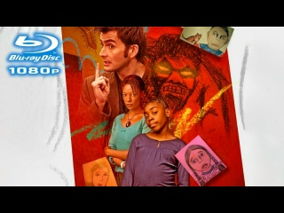
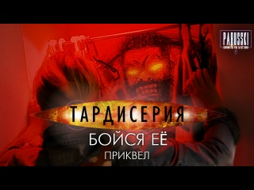
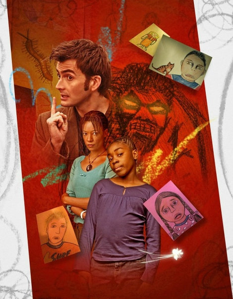

Оригинальная версия

Все серии сезона в одном видео
* без приквелов, мини-эпизодов и спецвыпусков

 Оригинальная версия | Все серии сезона в одном видео * без приквелов, мини-эпизодов и спецвыпусков |
Fear Her
Дата выхода: 24 июня 2006
Формат: 45-минутный эпизод
| Варианты озвучек: | * Разные: смотрите по инструкции |
|---|---|
| Скачивание и просмотр: |
Десятый Доктор и Роза Тайлер прибывают в Лондон 2012 года, чтобы увидеть Олимпиаду. Но находят таинственный ужас в самом странном месте.
